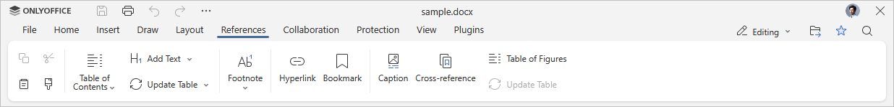
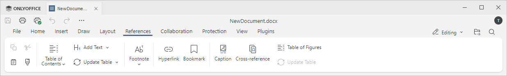

Kartica Reference
Kartica Reference u Uređivaču dokumenata omogućava upravljanje različitim vrstama referenci: dodavanje i osvežavanje sadržaja, kreiranje i uređivanje fusnota, umetanje hiperveza.
Odgovarajući prozor Online Uređivača dokumenata:

Odgovarajući prozor Desktop Uređivača dokumenata:

Pomoću ove kartice možete:
- kreirati i automatski osvežavati sadržaj,
- ubaciti fusnote i endnote,
- ubaciti hiperveze,
- dodati zabeleške,
- dodati natpise,
- ubaciti unakrsne reference,
- kreirati listu ilustracija.